FAQ
FAQ GUIDE
GUIDE CROSS
CROSS OLL
OLL PLL
PLL BEGINNER's
BEGINNER'sFIRST TWO LAYERS (F2L)

F2L is the second step of the Fridrich method for solving the Rubik's cube.
In this step 4 F2L pairs are inserted into their correct positions thus completing the first two layers.
Theory
F2L is an incredibly important step of the Fridrich method that can be done intuitively without the use of algorithms. It takes a while to master, but when you eventually to get into it, it will decrease your times significantly.
There are 41 basic cases that you can run into if you only consider a single pair and assume everything else to be solved. See the links section at the bottom for all cases and how to solve them.
Basic rules when solving F2L:
- Cube Rotations are to be avoided as much as possible. As a beginner you will find this hard, but try going towards reducing cube rotations to maximum of about 2-3 each solve.
- Maximize lookahead as much as possible! This is very important. During your practice sessions, try going slow and try to look ahead as much as you possibly can. (Naturally, first you have to become very comfortable with all algorithms and cases, and you must be able to apply all of them blind)
Intuitive/Memorization
Many people ask me about whether or not they should learn algorithms for F2L. Here is my response:
You should absolutely learn F2L intuitively. It will provide you with very good intuition for the Rubik's cube, and it will greatly increase your ability to look ahead. That being said, there are a few cases that are worth learning because their quick algorithmic solution turns out to be much quicker than the one you would get if you tried to approach it intuitively. For these few cases, I recommend learning algorithm to solve them. The notion of "intuitive" is very different for every person, but here are the basic cases that I learned algorithms for: (basically mostly those cases where corner and edge are somehow connected are good candidates for memorizing). For example I would consider learning cases such as:
 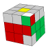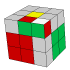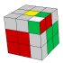
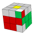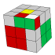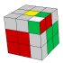 This PRINTABLE PAGE (pdf) contains some F2L solutions (thanks Andy!). But I would encourage you to only use the page to get inspiration.
Video Tutorials
My Tutorial on F2L comes in two parts:
Advanced F2L techniques
Here is a listing of some F2L techniques that you can use to get faster. Note that these are not required for you to get extremely fast. I know people that average in 12-14 aseconds and they barely use of this stuff. Instead they just turn very fast and have an extremely good look ahead.
Reducing # of cube rotations
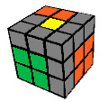This is an important part of getting faster. Many times you want to insert into a slot other than the one in front of you (FR slot). Sometimes you want to insert to the back, or the left, etc. It is very important that you try and find good ways of doing these insertions without making a cube rotation (Even though in some cases it is inevitable). Other times you may run into a case where you paired up a corner and the edge but the slot that you want to insert it into is not in a very convenient position.
For example: Do (F' U2 F) on solved cube to prepare. This took out a pair. How would you solve this pair? Probably (y' R' U2 R)? Well yes but there is also (l R U' R' U l') it can be executed very quickly with a little bit of practice. It is not always the best choice to use that insertion, but often times it is. For example if you don't see too much around the cube at the moment, you might want to do a cube rotation so that you can find your next pair.
Use of empty slots
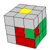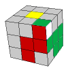You have to insert 4 F2L pairs during the F2L stage. That means that 75% of insertions take place while at least one other slot is still open! These open slots give you additional degrees of freedom that you can (and should) use to your advantage.
Consider this example: Do (D' L' U2 L D U) to set up. Most of you would solve this as (U' (R U2 R') U (R U R')), or something similar. But you can use the open slot on the left to your advantage and instead insert the corner using (D' (L' U L) D)! Check out that difference! :)
Consider another example: this is the case that we all hate, where the slot is filled, but edge has incorrect flip.
When you see this during your F2L solve you should either try really hard to pop it out quickly and hope that it breaks up, or you can try to handle it right away while many of your slots are open. Use (F2 L F2 L2 F' U' F L) to set the case up. The normal way to handle this case could be ((R U R') U2 (R U2 R') U y' (R' U' R)). Here is a faster to do this case if the adjacent slot on the left is open: (D (R U R') d'(L' U L) D')
Notice how again we are using the trick of moving the D layer to do useful things. Remeber this trick, it can be useful.
Stuck pieces
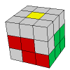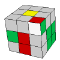Many many times you will find that corner and edge are not to be found on top, but are instead stuck in random wrong slots. It is often possible to join these pieces in some clever quick way that is usually still quite intuitive, but sometimes needs pointing out.
Check out this genious (incredibly fast) solution to the first case on the right. Use U R' D' F D R to set it up. Instead of ((L' U' L) U (F U F')), next time consider doing (R' u' R' u R)
My next example can't even be shown on a picture. To set it and solve it, do (R2 u R2 u' R2). You are trying to solve the FR slot, but the edge is stuck in the back, and even in the wrong orientation! So if you move the corner on top of it, the pair is dissaligned. What a dissaster! I bet you stumbled by that case at some point and cursed, because its a pain to solve intuitively.
Set up my last example using (L2 U' L2 D F2 D'). The edge is on the left in the wrong slot, and the corner is solved. Oh... you were going to take out the edge using something like L' U' L and then go on to insert it, weren't you? Well this will make you feel stupid: You can solve this case using an incredibly simple (and quick) algorithm such as (F L F2 L' F')
You can see you have a lot of work to do :). These are just examples, there are many many more cases you should look into. Check the links for the specific websites.
Multi-slotting
Multi-slotting is a technique in which while inserting one pair you try to set up an easy insertion for a second pair. So in a sense you are attempting to solve two pairs at the same time, or at least make the second insertion very easy.
The following example illustrates what multislotting is about. Set up your cube using (L' U' L U2 R L' U' R' L). Now to solve the front slot you may be tempted to right away just do R U R'. On the other hand, if you were multi-slotting, you would instead do an L' first, then do R U R', and then undo the L' with an L. See what happened? Not only did you solve the first pair, but you also paired up the second pair! Its ready for an extremely quick insertion now.
I personally do not use multislotting because I am of the opinion that it does not provide benefit unless studied extensively. It also requires you to see way too many things around the cube, and is without a doubt the most advanced technique for F2L. Make up your own mind on whether or not you want to look into it, and do let me know of the result if you decide to try it. Check CUBELOOP (linked on bottom) for many many multislotting cases. Note also that I don't know of a single cuber that seriously uses this technique.
My Advanced F2L Video
In my Advanced F2L video I go over most of what I covered above, and more:
Partial Edge Control
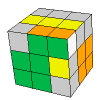This is a technique that does not make F2L easier, but instead it lets you control which OLL you will run into once you finish the F2L. As you can verify for yourself, most of the OLL cases where all the edges are already correctly oriented are very easy to solve. You apply partial edge control while you solve the last pair, and solve the edge orientation as you insert it. Here is how:
Set up your cube using ((F' U' F) R U2 R' U). You could just insert the pair using just the easiest way, U' F U F. However, if you use partial edge control, you would instead do the insertion using something like (U2 R U' R' U2 F' U F). This will orient all edges and insert that pair. This approach to finishing the last pair of F2L is called ZBF2L. CubeZone has a database of all ZBF2L cases. What you should most likely concentrate on are the base cases such as (what he calls) ConU_1a, and SepU_1a. F2L usually works by reducing to these two cases.
There is yet another approach to control edge orientation. It requires no algorithms that you need to learn, but is a little bit riskier. It uses the fact that if you only turn two faces of the cube (such as U and R), you can never un-orient an edge. Petrus method uses this property in a very clever way. What you need to do is solve two adjacent F2L pairs, and then orient all edges on the cube while it is still easy, because you still have a lot of freedom in what you move. You then would proceed to solve the entire F2L only using U and R so that you don't unorient anything.
If you manage to complete the last two F2L pairs like this, only using two sides (for example only using moves U/U'/U2 and R/R'/R2), you are guanranteed to get an easy OLL! Check details on how to orient edges in this way from Petrus website.
Links
Here are some useful websites for advanced methods:
CUBELOOP has a giant database of algs for Empty Slot cases, Stuck Pieces, and Multislotting. BE WARNED that some of his cases list algorithms that are just downright silly. Use your judgement when using his algorithms, don't just blindly take them all.
Speedcubing Advanced F2L page has a few very nice solutions to some cases, mostly Stuck Pieces cases.